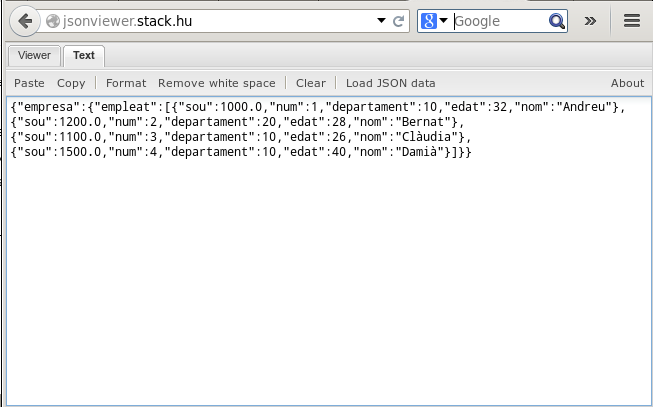
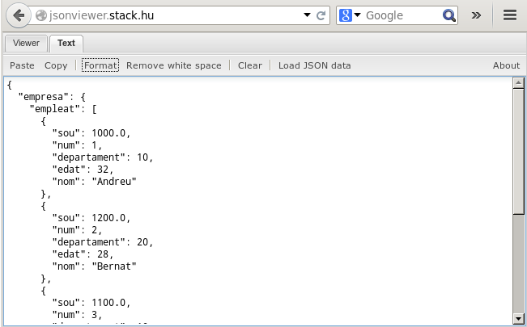

5.3 - Accés complet des de Java
Com ja havíem vist en els últims exemples del punt anterior, la qüestió es tracta d'anar agafant objectes i arrays, per l'estructura del JSON.
Mirem algun exemple ja més elaborat, on ens tocarà analitzar amb detall l'estructura json. Fem-lo sobre l'exemple de BICICAS. Podeu tornar a fer la consulta de l'estat actual en aquest moment a la pàgina http://gestiona.bicicas.es/apps/apps.php , seleccionar-ho tot i guardar-lo en el fitxer bicicas.json. És molt possible que tinguem problemes amb els caràcers especials, com les vocals accentuades, a causa de que el navegador utilitzat no les reconega, i en copiar-les al fitxer no tinguem ja la codificació correcta. No li donarem importància en aquest moment. Recordem ací l'estructura:
[
{"ocupacion":
[ {"id":"01","punto":"UJI - FCHS","puestos":28,"ocupados":11,"latitud":"39.99533","longitud":"-0.06999",
"porcentajeAltaOcupacion":"80","porcentajeBajaOcupacion":"20"},
{"id":"02","punto":"ESTACIÓN DE FERROCARRIL Y AUTOBUSES","puestos":28,"ocupados":8,"latitud":"39.98765",
"longitud":"-0.05281","porcentajeAltaOcupacion":"80","porcentajeBajaOcupacion":"20"},
{"id":"03","punto":"PLAZA DE PESCADERÍA","puestos":28,"ocupados":13,"latitud":"39.98580","longitud":"-0.03798",
"porcentajeAltaOcupacion":"80","porcentajeBajaOcupacion":"20"},
...
]
}
]
Com podem observar, comença per un array, no per un objecte, com sol ser habitual. L'únic que ens interessa és el primer element de l'array, ja que en posteriors anirien en tot cas missatges. El primer element és un objecte que té un únic membre ocupacion (o si en té més no ens interessen), que és un array amb totes les estacions. Cada estació és un objecte amb la informació que ens interessa.
import java.io.FileReader;
import java.io.IOException;
import com.github.cliftonlabs.json_simple.JsonException;
import com.github.cliftonlabs.json_simple.Jsoner;
import com.github.cliftonlabs.json_simple.JsonObject;
import com.github.cliftonlabs.json_simple.JsonArray;
public class mirarBicicas {
public static void main(String[] args) throws IOException, JsonException {
JsonArray arrel = (JsonArray) Jsoner.deserialize(new FileReader("bicicas.json"));
JsonObject obj = (JsonObject) arrel.get(0);
JsonArray estacions = (JsonArray) obj.get("ocupacion");
for (int i=0; i<estacions.size();i++){
JsonObject e = (JsonObject) estacions.get(i);
System.out.println(e.get("id") + ".- " + e.get("punto") + " (" + e.get("ocupados") + "/" + e.get("puestos") + ")");
}
}
}
Hem utilitzat la manera habitual, meny liosa però més llarga: agafar l'array, d'ell agafar el primer objecte i d'ell agafar l'array. I hem utilitzat un bucle for, amb tantes iteracions com la grandària de l'array.
Crear estructures JSON
Ens falta veure com escriure un document JSON. És molt fàcil anar creant l'estructura JSON. Només hem de recordar la manera d'afegir al JsonObject i al JsonArray.
- put("nom", element) per afegir un nou membre a un JsonObject
- add(element) per afegir un nou element a un JsonArray
Una vegada tinguem l'estructura, podrem passar-la a un string amb el mètode toJson, i la podrem guardar directament en un fitxer, per exemple.
Farem més d'un exemple, per poder practicar.
En el primer exemple generarem un JSON a partir de dades definides en el mateix programa, per mig de vectors. Intentarem generar aquest fitxer JSON:
{ "empresa":
{ "empleat":
[ {
"num": "1",
"nom": "Andreu",
"departament": "10",
"edat": "32",
"sou": "1000.0"
},
{
"num": "2",
"nom": "Bernat",
"departament": "20",
"edat": "28",
"sou": "1200.0"
},
{
"num": "3",
"nom": "Clàudia",
"departament": "10",
"edat": "26",
"sou": "1100.0"
},
{
"num": "4",
"nom": "Damià",
"departament": "10",
"edat": "40",
"sou": "1500.0"
}
]
}
}
Analitzem l'estructura. Tenim un objecte arrel, que consta d'un únic membre, empresa, que és un objecte. Aquest objecte té un únic membre que és un array. Cada element de l'array és un objecte, i els seus membres ja són clau-valor.
import java.io.FileWriter;
import java.io.IOException;
import com.github.cliftonlabs.json_simple.JsonObject;
import com.github.cliftonlabs.json_simple.JsonArray;
public class transformarEmpleats {
public static void main(String[] args) throws IOException {
String[] noms = {"Andreu","Bernat","Clàudia","Damià"};
int[] departaments = {10,20,10,10};
int[] edats = {32,28,26,40};
double[] sous = {1000.0,1200.0,1100.0,1500.0};
JsonObject arrel = new JsonObject();
JsonObject empresa = new JsonObject();
arrel.put("empresa", empresa);
JsonArray empleats = new JsonArray();
empresa.put("empleat", empleats);
for (int i=0;i<4;i++){
JsonObject emp = new JsonObject();
emp.put("num", i+1);
emp.put("nom", noms[i]);
emp.put("departament", departaments[i]);
emp.put("edat", edats[i]);
emp.put("sou", sous[i]);
empleats.add(emp);
}
FileWriter f = new FileWriter("Empleats.json");
f.write(arrel.toJson());
f.close();
}
}
El resultat és el següent:
{"empresa":{"empleat":[{"num":1,"sou":1000.0,"nom":"Andreu","edat":32,"departament":10},{"num":2,"sou":1200.0,"nom":"Bernat","edat":28,"departament":20},{"num":3,"sou":1100.0,"nom":"Clàudia","edat":26,"departament":10},{"num":4,"sou":1500.0,"nom":"Damià","edat":40,"departament":10}]}}
Per a poder-ho estudiar millor, tornem a utilitzar un visor JSON online, en aquesta ocasió un altre diferent a l'utilitzat en la pregunta 5.1.
|  |  |
I un altre problema és que els membres de cada empleat estan desordenats. No és que haja eixit malament, perquè hem de recordar que un objecte JSON és un conjunt no ordenat de membres.
Si volem que apareguen ordenats, és tan senzill com substituir el JsonObject que volem que aparega ordenat per un LinkedHashMap. Aquest és el fragment de programa substituït:
for (int i=0;i<4;i++){
Map emp = new LinkedHashMap();
emp.put("num", i+1);
emp.put("nom", noms[i]);
emp.put("departament", departaments[i]);
emp.put("edat", edats[i]);
emp.put("sou", sous[i]);
empleats.add(emp);
}
Un altre exemple, el de Bicicas, però donant-li una altra estructura. Per tant llegirem l'original, i anirem construint la següent estructura:
{ "bicicas":
[ {"num":"01","nom":"UJI - FCHS","llocs":28,"ocupats":11,"lliures":17},
{"num":"02","nom":"ESTACIÓN DE FERROCARRIL Y AUTOBUSES","llocs":28,"ocupats":8,"lliures":20},
{"num":"03","nom":"PLAZA DE PESCADERÍA","llocs":28,"ocupats":13,"lliures":15},
...
]
}
]
Per a veure més possiblitats hem utilitzat ara la manera de fer-lo en una línia, que com hem de fer cast (posar el tipus) a cada moment, queda prou engorrós en quant a parèntesis. I hem utilitzat ara el foreach per a recórrer l'array.
Els mètodes per a afegir són:
- Afegir a un objecte: put(clau,valor)
- Afegir a un array: add(valor)
on valor pot ser també un objecte, ...
Observeu sobretot la manera tan senzilla d'escriure el fitxer JSON. No cal fer cap transformació com en el cas de XML. Senzillament utilitzem el mètode de convertir JSON a string, i ho escrivim en el fitxer.
import java.io.FileReader;
import java.io.FileWriter;
import java.io.IOException;
import java.io.Reader;
import java.io.Writer;
import com.github.cliftonlabs.json_simple.JsonException;
import com.github.cliftonlabs.json_simple.Jsoner;
import com.github.cliftonlabs.json_simple.JsonObject;
import com.github.cliftonlabs.json_simple.JsonArray;
public class transformarBicicas {
public static void main(String[] args) throws IOException, JsonException {
Reader r_json = new FileReader("bicicas.json");
JsonArray estacions = (JsonArray) ((JsonObject) ((JsonArray ) Jsoner.deserialize(r_json)).get(0)).get("ocupacion");
JsonArray destEstacions = new JsonArray();
for (Object est : estacions){
JsonObject e = (JsonObject) est;
JsonObject destE = new JsonObject();
destE.put("num", e.get("id"));
destE.put("nom", e.get("punto"));
destE.put("llocs", e.get("puestos"));
destE.put("ocupats", e.get("ocupados"));
int lliures = Integer.parseInt(e.get("puestos").toString())-Integer.parseInt(e.get("ocupados").toString());
destE.put("lliures", lliures );
destEstacions.add(destE);
}
JsonObject bicicas = new JsonObject();
bicicas.put("bicicas",destEstacions);
Writer w_json = new FileWriter("bicicas2.json");
w_json.write(bicicas.toJson());
w_json.close();
}
}
El resultat seria aquest (he tabulat per a una millor visualització):
{"bicicas":
[{"num":"01","llocs":28,"ocupats":11,"lliures":17,"nom":"UJI - FCHS"},
{"num":"02","llocs":28,"ocupats":8,"lliures":20,"nom":"ESTACIÓN DE FERROCARRIL Y AUTOBUSES"},
{"num":"03","llocs":28,"ocupats":13,"lliures":15,"nom":"PLAZA DE PESCADERÍA"},
{"num":"04","llocs":14,"ocupats":5,"lliures":9,"nom":"PASEO BUENAVISTA-GRAO"},
{"num":"05","llocs":14,"ocupats":7,"lliures":7,"nom":"HOSPITAL GENERAL"},
...
]}
L'únic problema és que ha eixit desordenat: l'array està ordenat, però cada objecte no ha eixit amb l'ordre que havíem creat, i així el nom de cada objecte ha eixit al final.
Si volem que ens aparega ordenat, utilitzarem LinkedHashMap, igual que en l'exemple anterior.
import java.io.FileReader;
import java.io.FileWriter;
import java.io.IOException;
import java.io.Reader;
import java.io.Writer;
import java.util.LinkedHashMap;
import java.util.Map;
import com.github.cliftonlabs.json_simple.JsonException;
import com.github.cliftonlabs.json_simple.Jsoner;
import com.github.cliftonlabs.json_simple.JsonObject;
import com.github.cliftonlabs.json_simple.JsonArray;
public class transformarBicicas2 {
public static void main(String[] args) throws IOException, JsonException {
Reader r_json = new FileReader("bicicas.json");
JsonArray estacions = (JsonArray) ((JsonObject) ((JsonArray ) Jsoner.deserialize(r_json)).get(0)).get("ocupacion");
JsonArray destEstacions = new JsonArray();
for (Object est : estacions){
JsonObject e = (JsonObject) est;
Map destE = new LinkedHashMap();
destE.put("num", e.get("id"));
destE.put("nom", e.get("punto"));
destE.put("llocs", e.get("puestos"));
destE.put("ocupats", e.get("ocupados"));
int lliures = Integer.parseInt(e.get("puestos").toString())-Integer.parseInt(e.get("ocupados").toString());
destE.put("lliures", lliures );
destEstacions.add(destE);
}
JsonObject bicicas = new JsonObject();
bicicas.put("bicicas",destEstacions);
Writer w_json = new FileWriter("bicicas2.json");
w_json.write(bicicas.toJson());
w_json.close();
}
}
Ara el resultat sí que està ordenat:
{"bicicas":
[{"num":"01","nom":"UJI - FCHS","llocs":28,"ocupats":11,"lliures":17}
,{"num":"02","nom":"ESTACIÓN DE FERROCARRIL Y AUTOBUSES","llocs":28,"ocupats":8,"lliures":20},
{"num":"03","nom":"PLAZA DE PESCADERÍA","llocs":28,"ocupats":13,"lliures":15},
{"num":"04","nom":"PASEO BUENAVISTA-GRAO","llocs":14,"ocupats":5,"lliures":9},
{"num":"05","nom":"HOSPITAL GENERAL","llocs":14,"ocupats":7,"lliures":7},
...
]}
Llicenciat sota la Llicència Creative Commons Reconeixement NoComercial CompartirIgual 2.5